Vamos a implementar un modelo de clasificación mediante una red neuronal convolucional para la identificación de casos de neumonía presentado en Kaggle. Usaremos Keras y su API Sequential para crear una red capa por capa. Además compararemos el desempeño de nuestra red contra un modelo creado a partir de Transfer Learning, utilizando la red preentrenada (VGG16)[https://arxiv.org/abs/1409.1556].
Estrategia
La estrategia a seguir es la siguiente: 1. Descargar los datos de Kaggle: Chest X-ray Images (Pneumonia). 2. Los datos fueron descargados en Colab y los conjuntos fueron modificados para que se cumpliera lo siguiente:
- Conjunto de Entrenamiento: 80% de las imágenes. - Conjuntos de Validación y Prueba: 10% de las imágenes cada uno. - Se aseguró que la proporción de imágenes de las clases PNEUMONIA y NORMAL fuera la misma en cada conjunto. 3. Esta fase preliminar se realizó en el siguiente notebook: 4. Se realizó una fase de Análisis Exploratorio con las imágenes. 5. Se implementó una red neuronal convolucional (CNN) con Keras para la clasificación de las imágenes. a) Se evaluó el desempeño de la CNN con el conjunto de prueba. 6. Se implementó una red neuronal convolucional basada en transferencia de conocimiento. a) Se tomó como base la red preentrenada VGG16 con los pesos de imagenet. b) Se evaluó el desempeño de la red VGG16-base con el conjunto de prueba.
Preliminares y carga de datos
Montamos el acceso a Drive para cargar los datos
from google.colab import drivedrive.mount('/content/gdrive/')root_path ='/content/gdrive/My Drive/kaggle/ap-jrl-neumonia/chest_xray'%cd $root_path/%ls
Drive already mounted at /content/gdrive/; to attempt to forcibly remount, call drive.mount("/content/gdrive/", force_remount=True).
/content/gdrive/My Drive/kaggle/ap-jrl-neumonia/chest_xray
chest_xray/ modelo_neu_jrl_TRAINED.h5 test/
history_cnn.pkl modelo_vgg16_jrl.h5 train/
__MACOSX/ modelo_VGG16_jrl_trained_20_epocas.h5 val/
modelo_neu_jrl.h5 output.png
Carga de las ibrerías a utilizar
import pandas as pdimport numpy as npimport osimport matplotlib.pyplot as pltimport seaborn as snssns.set(style='ticks', context='talk', palette='Spectral', font_scale=0.9)
# Variables con los paths a los directorios de cada conjuntotest_dir = os.path.join(root_path, 'test')train_dir = os.path.join(root_path, 'train')val_dir = os.path.join(root_path, 'val')
Análisis Exploratorio
#@title Proporción de clases en los conjuntos de datos {display-mode: "form"}#@markdown Las siguiente gráfica muestra la proporción#@markdown de clases en cada conjunto de datos.# Contamos el número de imágenes pertenecientes a cada conjuntodef count_samples(): samples = {}for set_ in ['test', 'train', 'val']: samples[set_] = {}for class_ in ['NORMAL', 'PNEUMONIA']: path = os.path.join(root_path, set_) k =len(os.listdir(f'{path}/{class_}')) samples[set_].update({class_: k})# Almacenamos los datos en un pequeño dataframe df_samples = pd.DataFrame(samples)return df_samplesdf_samples = count_samples()# Número total de observacionesn = df_samples.values.sum()# Número de casos positivos y de casos negativosn_neg, n_pos = df_samples.sum(axis =1).valuesprint(f'Num. de casos positivos: {n_pos} = {n_pos / n:.2f}')print(f'Num. de casos negativos: {n_neg} = {n_neg / n:.2f}')# Visualizaciónfig, ax = plt.subplots(2,1, figsize=(10, 5))# Número total de casosax[0].barh(['Pneumonia/Normal'], [n_pos])ax[0].barh(['Pneumonia/Normal'], [n_neg], left=[n_pos], color='#61dcad')ax[0].set(title='Total de casos Neumonía vs Normal')# Proporción de etiquetas por set(df_samples / df_samples.sum()).iloc[::-1].T.plot(kind='barh', ax = ax[1], xlim=(0, 1), color = ['#fa4432', '#61dcad'], title='Proporción de clases por conjunto de datos')plt.tight_layout()plt.legend(loc='center left', bbox_to_anchor=(1.0, 0.5))plt.show()
Num. de casos positivos: 4273 = 0.73
Num. de casos negativos: 1583 = 0.27
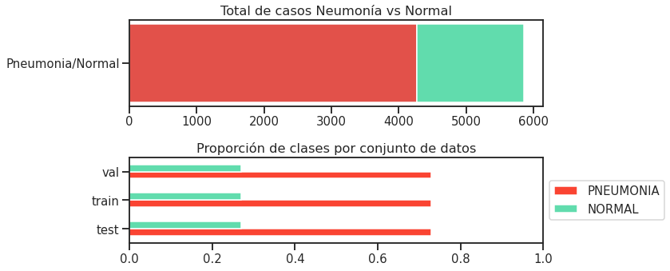
Definición de las clases:
⬤ Positivo = PNEUMONIA
⬤ Negativo = NORMAL
Tamaño de los conjuntos
Entrenamiento: 80%
Validación: 10%
Prueba: 10%
# Número total de observacionesn = df_samples.values.sum()# Número de casos positivos y de casos negativosn_neg, n_pos = df_samples.sum(axis =1).values
Mostramos algunas imágenes de ejemplo
Se muestra una imagen aleatoria de ejemplo por cada conjunto de entrenamiento (train, test, val) y por cada clase (PNEUMONIA y NORMAL). - Se obseva que las dimensiones de las imágenes no son uniformes, lo cual deberá tomarse en cuenta cuando se implemente el generador de imágenes con Keras.
import tensorflow.keras as kfrom tensorflow.keras.preprocessing.image import load_img, img_to_array
#@title Imágenes de ejemplo#@markdown (desplegar la celda para ocultar/mostrar al código)def show_random_images(): fig, ax = plt.subplots(2, 3, figsize=(16, 9))for i, class_ inenumerate(['NORMAL', 'PNEUMONIA']):for j, set_ inenumerate(['train', 'test', 'val']): path =f'{root_path}/{set_}/{class_}/' files = os.listdir(path)file= np.random.choice(files, size=1, replace=False)[0] file_path =f'{path}/{file}' color ='#fa4432'if class_ =='PNEUMONIA'else'#61dcad' img = load_img(file_path) n, m, c = img_to_array(img).shape ax[i, j].imshow(img) ax[i, j].set_title(f'{class_} ({set_}) - [{n}x{m}px]', y =1.02) ax[i, j].grid(False) ax[i, j].set_xticks([]) ax[i, j].set_yticks([]) ax[i, j].patch.set_edgecolor(color) ax[i, j].patch.set_linewidth('10') plt.tight_layout() plt.show()show_random_images()
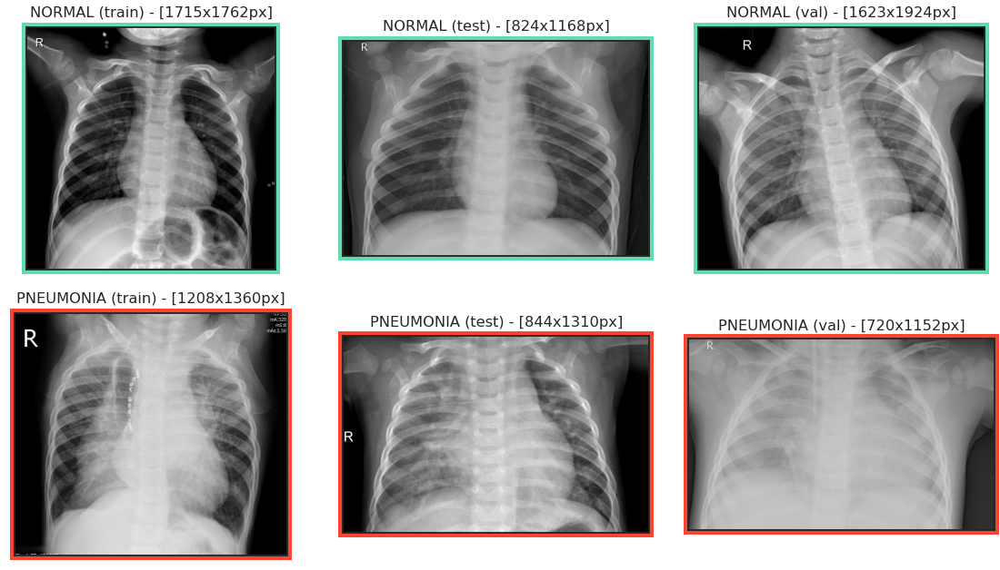
Propiedades de las imágenes
from tensorflow.keras.preprocessing.image import ImageDataGenerator
A continuación se carga una muestra de 150 imágenes por conjunto (train, test, val) y por clase (PNEUMONIA y NORMAL). A partir de esta muestra se hará un análisis exploratorio para comparar el conjunto de imágenes tanto entre clases como entre conjuntos. - La función images_to_array() permite cargar la muestra de imágenes en formato np.ndarray.
def images_to_array(directory, target_size = (150, 150), n_samples =150):''' Lee n número de imágenes aleatorias del directorio indicado y devuelve un arreglo numpy de las mismas''' files = os.listdir(directory)# Muestrea aleatoriamente n imágenes files = np.random.choice(files, size=n_samples, replace =False)forfilein files: img = load_img(f'{directory}/{file}', target_size = target_size, color_mode ='grayscale') img_arr = img_to_array(img)try: imgs_tensor = np.concatenate([imgs_tensor, img_arr], axis=2)exceptUnboundLocalError: imgs_tensor = img_arrreturn imgs_tensor
CPU times: user 9.16 s, sys: 302 ms, total: 9.46 s
Wall time: 10.3 s
Imágenes promedio por conjunto y clase
#@markdown La siguiente figura muestra una imagen promedio por cada conjunto y clase#@markdown del conjunto de datos.#@markdown El código para generar la figura se puede desplegar en esta misma celda.fig, ax = plt.subplots(2, 3, figsize=(12, 7))for i, set_ inenumerate(sets):for j, class_ inenumerate(classes): imgs_tensor = sample_images[set_][class_] mean_image = np.mean(imgs_tensor, axis=2) color ='#fa4432'if class_ =='PNEUMONIA' \else'#61dcad' ax[j, i].imshow(mean_image, vmin=0, vmax=255, cmap='Greys_r') ax[j, i].set_title(f'{class_} ({set_})', y =1.05) ax[j, i].set_xticks([]) ax[j, i].set_yticks([]) ax[j, i].patch.set_edgecolor(color) ax[j, i].patch.set_linewidth('10')plt.tight_layout()plt.suptitle("Imágenes promedio por conjunto y clase", y =1.05)plt.show()
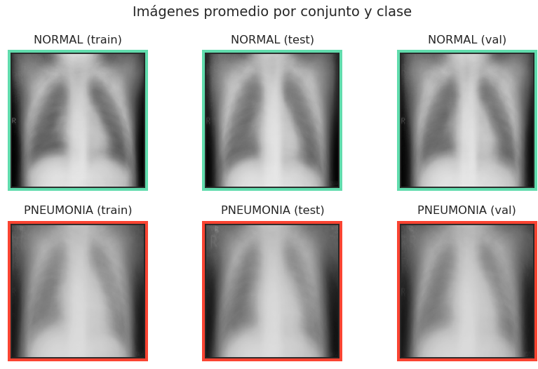
Es posible observar que, independientemente del conjunto, la clase PNEUMONIA tiende a mostrar una mayor densidad en el campo intrapulmonar, es decir, la zona interna de los pulmones se ve más iluminada (intensa) en las muestras con neumonía.
Histogramas de intensidad y función de distribución acumulada (FDA)
#@markdown La siguiente figura muestra los histogramas de intensidad de cada#@markdown **imagen promedio** así como la función de distribución acumulada de#@markdown dichos valores.import scipy.ndimage as ndifig, ax = plt.subplots(2, 3, figsize=(15, 7))for i, set_ inenumerate(sets):for j, class_ inenumerate(classes): color ='#fa4432'if class_ =='PNEUMONIA'else'#61dcad' imgs_tensor = sample_images[set_][class_] mean_image = np.mean(imgs_tensor, axis=2) mean_image_arr = mean_image.ravel()# Grafica el histograma ax[j, i].hist(mean_image_arr, bins =256, histtype ='stepfilled', color = color) hist = ndi.histogram(mean_image, min=0, max=255, bins =256)# Grafica la función de distribución acumulada cdf = hist.cumsum() / hist.sum() ax_2 = ax[j, i].twinx() ax_2.plot(cdf, c='blue') ax_2.legend(['FDA']) ax[j, i].set_title(f'{class_} ({set_})', y =1.05) ax[j, i].set(xlim = (0, 256))plt.suptitle("Histograma de intensidad y FDA de las imágenes promedio (por conjunto y clase)", y =1.05)plt.tight_layout()plt.show()
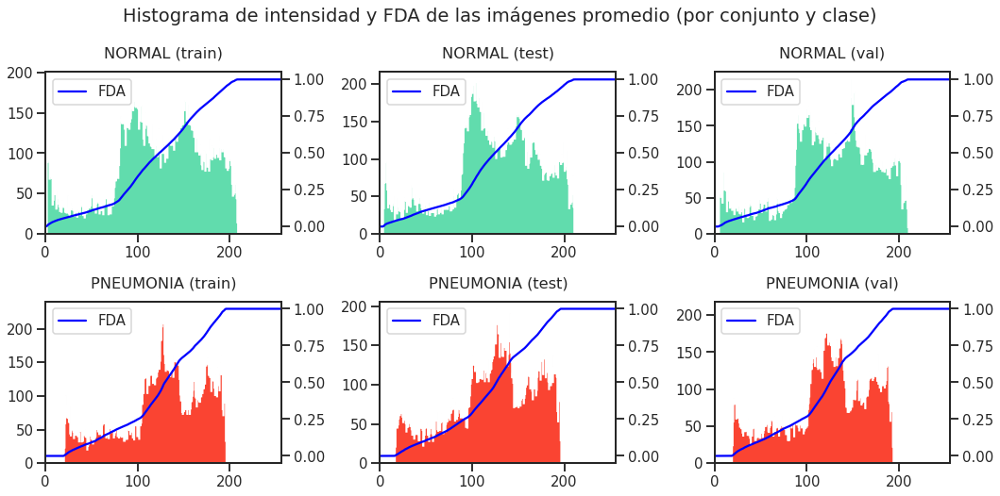
En los histogramas de intensidad se observa la frecuencia de intensidad de los pixeles de las imágenes promedio mostradas en la figura anterior. A partir de estas imágenes promedio podemos suponer lo siguiente para cada conjunto de imágenes: - Es posible notar que las imáges con la etiqueta NORMAL muestran picos de intensidad en 100 y 150. - Por otro lado, las imágenes con etiqueta PNEUMONIANO muestran este mismo patrón. - En general, las imágenes con PNEUMONIAno alcanzan intensidades mayores a 200.
Imágenes promedio y desviación estándar por clase
#@markdown La siguiente figura muestra la **imagen promedio de cada clase** así como#@markdown la **desviación estándar** de cada imagen.fig, ax = plt.subplots(1, 4, figsize = (15, 4))for j, class_ inenumerate(classes): color ='#fa4432'if class_ =='PNEUMONIA'else'#61dcad' all_imgs = np.concatenate([sample_images[set_][class_]for set_ in sets], axis =2) mean_img = np.mean(all_imgs, axis =2) std_img = np.std(all_imgs, axis =2) img_dic = {'Promedio': mean_img, 'Desv. estandar': std_img}for i, key inzip(range(0, 4, 2), img_dic.keys()): ax[j+i].imshow(img_dic[key], vmin=0, vmax=255, cmap='Greys_r') ax[j+i].patch.set_edgecolor(color) ax[j+i].patch.set_linewidth('10') ax[j+i].set_title(f'{class_}\n{key}', y =1.05) ax[j+i].set_xticks([]) ax[j+i].set_yticks([])plt.show()
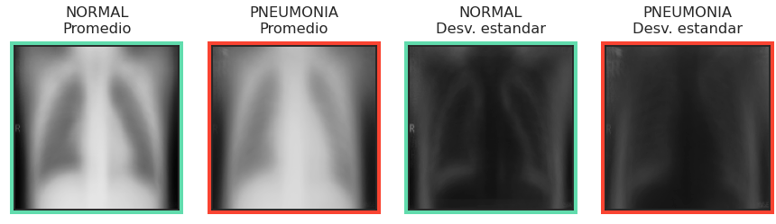
En la figura anterior es posible comparar la imagen promedio de las imágenes de la clase NORMAL vs la clase PNEUMONIA, así como la variabilidad de las intensidades de cada clase en términos de desviación estádar. Se observa lo siguiente: - Como en las figuras anteriores, las imágenes de la clase PNEUMONIA muestran una mayor densidad en la región torácica. - Las imágenes NORMAL tienen mayor contraste y bordes más definidos entre los elementós óseos (blanco) y región del parénquima pulmonar (negro).
Red Convolucional
A continuación se muestra la implementación de una red neuronal convolucional para clasificación de radiografías de torax. 1. Se usarán las imágenes de los conjuntos train y val para la fase de entrenamiento. 2. Se usará la clase ImageDataGenerator de Keras como método de aumento de datos. 3. Se tomará en cuenta el desbalance de clases para la inicialización de los pesos de la capa de salida de la red. 4. Se utilizará el optimizador Adam con momento de Nesterov. 5. Se usará la entropía cruzada binaria (binary cross-entropy) como función de pérdida. 5. Se monitorearán las siguientes métricas durante el entrenamiento (tanto para el conjunto train como para el conjunto val: - Exactitud (accuracy) - Precisión - Sensibilidad - Área bajo la curva ROC
Found 4688 images belonging to 2 classes.
Found 584 images belonging to 2 classes.
Found 584 images belonging to 2 classes.
Consideramos el desbalance de clases
Tomando en cuenta que existe un desbalance de clases vamos a forzar que el peso de la última capa de la red, encargada de devolver la probabilidad de la clase PNEUMONIA, tome en cuenta este desbalance. > Este sesgo inicial se calculó mediante la siguiente fórmula:
# Consideramos el bias inicial debido al desbalance de clasesprint(f'Num. de casos positivos: {n_pos} = {n_pos / n:.2f}')print(f'Num. de casos negativos: {n_neg} = {n_neg / n:.2f}')# bias inicial para la inicialización de los pesos en la capa de salidainitial_bias = np.log([n_pos / n_neg])output_bias = k.initializers.Constant(initial_bias)
Num. de casos positivos: 4273 = 0.73
Num. de casos negativos: 1583 = 0.27
Para la siguiente visualización utilizaremos la librería visualkeras.
%%capture# Instala la librería visualkeras que permite visualizar la arquitectura de la red!pip install git+https://github.com/paulgavrikov/visualkeras
Usaremos dos callbacks de Keras durante el entrenamiento: - ModelCheckpoint: Permite guardar el modelo con cierta frecuencia dureante el entrenamiento. - EarlyStopping: Permite detener la ejecución del entrenamiento si cierta métrica, definida por el usuario, no mejora depués de cierto criterio (en este caso el número de épocas).
from tensorflow.keras.callbacks import ModelCheckpoint, EarlyStopping# Early Stoppingearly_stop = EarlyStopping( monitor ='val_loss', mode ='min', patience =10)# ModelCheckpointmodel_filepath =f"{root_path}/modelo_neu_jrl.h5"checkpoint = ModelCheckpoint(model_filepath, monitor ='val_loss', verbose =1, save_best_only =True, mode ='min')# Lista de Callbackscallbacks_list = [checkpoint, early_stop]
# Carga del modelo# import pickle# model = k.models.load_model(f"{root_path}/modelo_neu_jrl.h5")# with open(f"{root_path}/history_cnn.pkl", 'rb') as file:# history = pickle.load( file )
Evaluación del modelo
#@title Desempeño de la red durante el entrenamiento#@markdown (desplegar para ver el código)# Calculamos el F1 score a partir de los resultados de Precision y Recalldef get_f1_score(precision_arr, recall_arr): epsilon =1e-7 precision_arr = np.array(precision_arr) recall_arr = np.array(recall_arr) f1 = (2) * (precision_arr*recall_arr) /\ (precision_arr + recall_arr + epsilon)return f1def plot_history(train_hist, suptitle=''):# Agregar F1 score train_hist['F1_score'] = get_f1_score(train_hist['precision'], train_hist['recall']) train_hist['val_F1_score'] = get_f1_score(train_hist['val_precision'], train_hist['val_recall'])# Gráficas metrics = [key for key in train_hist.keys()ifnot key.startswith('val')] fig, ax = plt.subplots(2, int(len(metrics)/2), figsize = (16, 8))for i, metric inenumerate(metrics):if i <3: j =0else: i, j = i -3, 1 ax[j, i].plot(train_hist[metric]) ax[j, i].plot(train_hist[f"val_{metric}"]) ax[j, i].set_title(metric.replace('_', ' ').capitalize()) ax[j, i].set_xlabel('Épocas') ax[j, i].grid()if metric !='loss': ax[j, i].set_ylim(0.7, 1.05)else: ax[j, i].legend(['Train', 'Val']) plt.tight_layout() plt.suptitle(suptitle, y =1.02) plt.show()# Ejecutamos la funcióntrain_hist = history #.history.copy()plot_history(train_hist, suptitle='CNN: Métricas de evaluación en '+'los conjuntos de Entrenamiento y Validación')
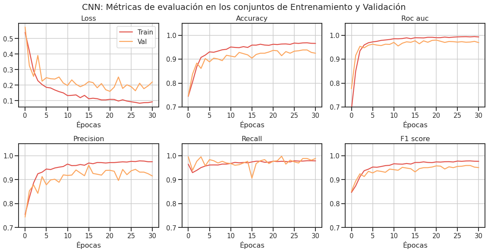
Evaluación con el conjunto de prueba
score_test = model.evaluate(test_generator, batch_size=128)for i, j inzip(history.keys(), score_test):print(f'{i.upper()}: {j:.3f}')
#@markdown (desplegar para ver el código)from sklearn.metrics import confusion_matrixdef plot_cfn_matrix(y_test, y_pred_classes, suptitle=''): cf_matrix = confusion_matrix(y_test, y_pred_classes) labels_a = np.array( [f'{i}\n{j}'for i, j inzip(['TN', 'FP', 'FN', 'TP'], cf_matrix.flatten() ) ]).reshape(2,2) fig, ax = plt.subplots(1, 2, figsize=(12, 4))# Valores crudos sns.heatmap(cf_matrix, cmap ='Reds', ax = ax[0], fmt ='', annot = labels_a, cbar_kws={'label': 'Imágenes'})# Porcentajes sns.heatmap(cf_matrix/np.sum(cf_matrix), cmap ='Blues', ax = ax[1], fmt ='.2%', annot =True, cbar_kws={'label': 'Porcentaje'})for i inrange(2): ax[i].set(aspect ="equal", xlabel ='Predichos', ylabel ='Reales')for _, spine in ax[i].spines.items(): spine.set_visible(True) plt.suptitle(suptitle, y =1.05) plt.tight_layout()# Genera la gráficaplot_cfn_matrix(y_test, y_pred_classes, suptitle='Matriz de confusión CNN (conjunto de prueba)')
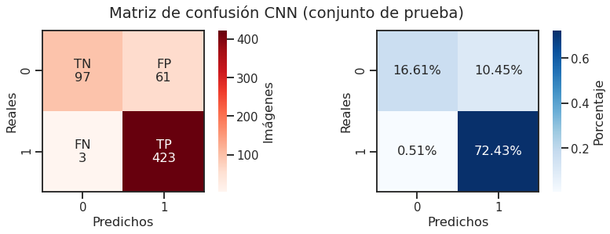
Curva ROC y Curva de Precisión Sensibilidad
Para esta evaluación usamos las métricas: - Área bajo la curva ROC. - Promedio de Precisión-Sensibilidad (avgPR): > \(\text{AP} = \sum_n (R_n - R_{n-1}) P_n\)
#@markdown (desplegar para ver el código)from sklearn.metrics import roc_auc_score, roc_curve, \ f1_score, precision_recall_curve, average_precision_scoredef plot_roc_and_pr_curves(y_test, y_pred, suptitle='', name =''): auc_ = roc_auc_score(y_test, y_pred) f1_score_ = roc_auc_score(y_test, y_pred) vg_pr_score = average_precision_score(y_test, y_pred) fpr, tpr, _ = roc_curve(y_test, y_pred) prec_, recall_, _ = precision_recall_curve(y_test, y_pred) pr_baseline = y_test.sum() /len(y_test) fig, ax = plt.subplots(1, 2, figsize=(14, 6))# Curva ROC ax[0].plot(fpr, tpr, c ='#00A3A4', linewidth =4, label =f'{name}: {auc_:.3f} AUC') ax[0].plot([0, 1], [0, 1], c ='gray', linestyle ='--', label ='Aleatorio') ax[0].legend() ax[0].set(xlabel ='1 - Especificidad (FPR)', ylabel ='Sensibilidad (TPR)')# Curva de Precision-Sensibilidad ax[1].plot(recall_, prec_, c ='#F48000', linewidth =4, label =f'{name}: {vg_pr_score:.3f} avgPR') ax[1].plot([0, 1], [pr_baseline, pr_baseline], c ='gray', linestyle ='--', label ='Aleatorio') ax[1].legend() ax[1].set(xlabel ='Sensibilidad', ylabel ='Precisión')for i, title inenumerate(['Curva ROC','Curva Precisión-Sensibilidad']): ax[i].set(aspect='equal', ylim=(0,1.02), title=title) ax[i].grid(True) plt.tight_layout() plt.suptitle(suptitle, y =1.02) plt.show()# Genera la gráficaplot_roc_and_pr_curves(y_test, y_pred, suptitle='Desempeño CNN', name ='CNN')
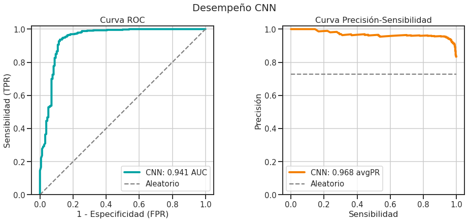
Interpretación de Resultados
Vemos que la CNN obtiene buenos valores de desempeño en todas las métricas. - En particular nos interesa que la sensibilidad del modelo sea alta (0.98) y por consecuencia que el número de Falsos Negativos sea bajo (9 FN). - Se observa que el modelo sólo identificó 9 Falsos Negativos, lo cual es un buen resultado pues nos interesa que casos verdaderos de neumonía NO sean identificados como casos NORMALES. - El modelo tiene una mayor sensibilidad (0.98) que precisión (0.89). Es un buen resultado, pero hay que considerar que esto también es consecuencia de que en el conjunto de datos haya considerablemente más ejemplos positivos que negativos.
Transferencia de conocimiento
Uso de la red VGG16
Para esta fase vamos a implementar el método de transferencia de conocimiento (Transfer learning) usando la red VGG16 (Simonyan and Zisserman, 2015).
from tensorflow.keras.applications import VGG16vgg16 = VGG16(weights ='imagenet', include_top =False,# Definimos el tamaño de la capa de entrada# igual a las dimensiones de las imágenes input_shape = (IMG_HEIGHT, IMG_WIDTH, 3))
Visualizamos la arquitectura de la VGG16
visualkeras.layered_view(vgg16, scale_xy=1)
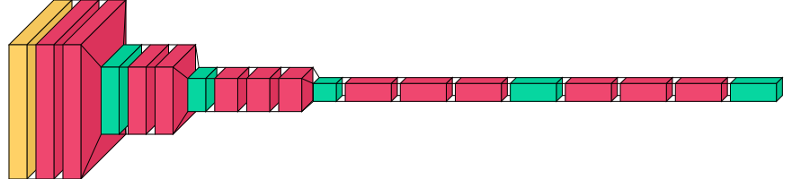
from tensorflow.keras.layers import Input# Creamos nuestro nuevo modelo# Primero congelamos los pesos de las primeras capas de VGG16vgg16.trainable =Falsemodel_vgg16 = Sequential()# Añadimos a VGG16 como si fuese una capamodel_vgg16.add(Input(shape = (IMG_HEIGHT, IMG_WIDTH, 3)))model_vgg16.add(vgg16)model_vgg16.add(Flatten())model_vgg16.add(Dense(128, activation='relu'))model_vgg16.add(Dropout(0.4))model_vgg16.add(Dense(1, activation='sigmoid', bias_initializer = output_bias))model_vgg16.summary()
# Ejecutamos la funcióntrain_hist_v16 = history_vgg16.copy()plot_history(train_hist_v16, suptitle='VGG16-base: Métricas de evaluación en '+'los conjuntos de Entrenamiento y Validación')
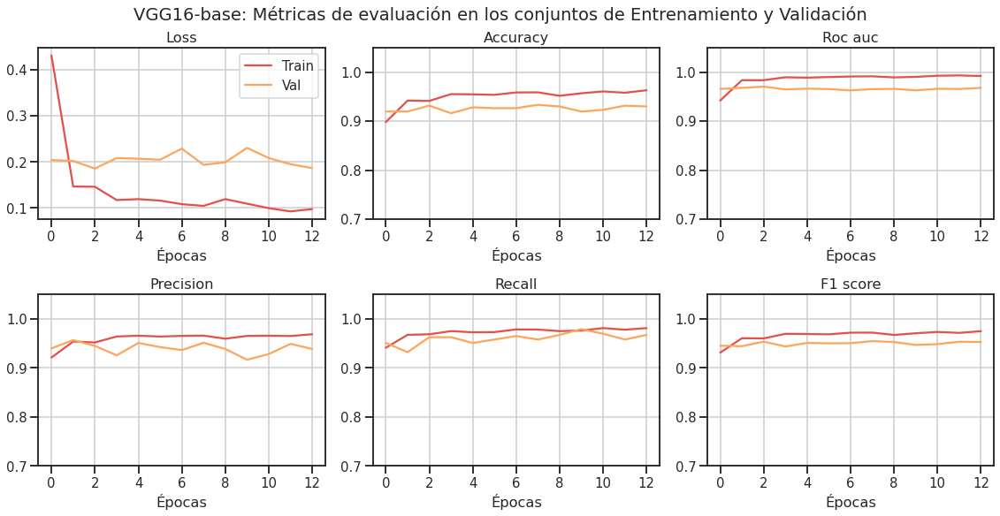
score_test_vgg16 = model_vgg16.evaluate(test_generator, batch_size=64)for i, j inzip(train_hist_v16.keys(), score_test_vgg16):print(f'{i.upper()}: {j:.2f}')
#@markdown (desplegar para ver el código)# Genera la gráficaplot_cfn_matrix(y_test, y_pred_classes_v16, suptitle='Matriz de confusión VGG16-base (conjunto de prueba)')
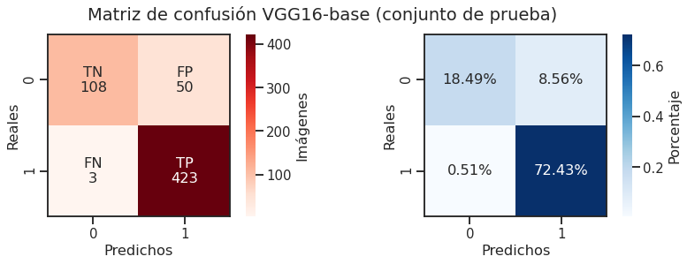
# Genera la gráficaplot_roc_and_pr_curves(y_test, y_pred_v16, suptitle ='Desempeño VGG16-base', name ='VGG16')
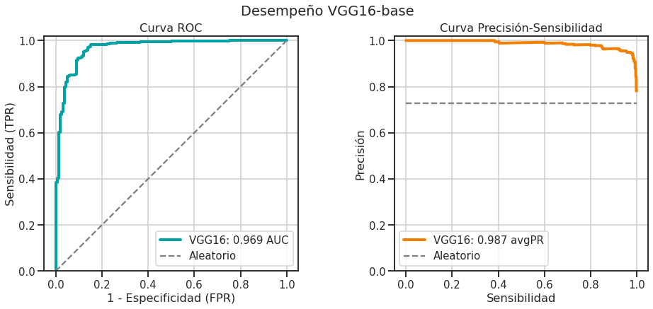
Interpretación de Resultados
La red VGG16 mostró buenos resultados, teniendo un desempeño similar al de la primer red (CNN) en términos de Sensibilidad. Sin embargo, mostró una mejora en la precisión y por consiguiente en el Área bajo la curva ROC, así como un mayor valor de avgPR.